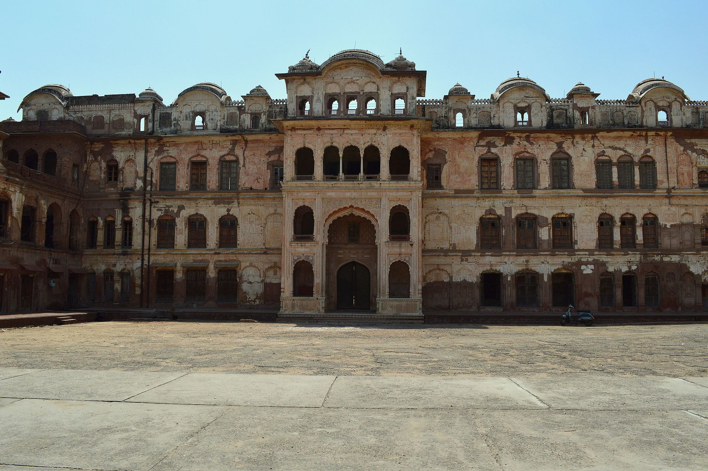
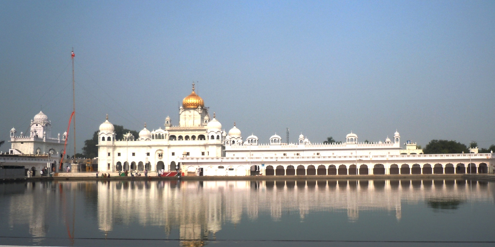
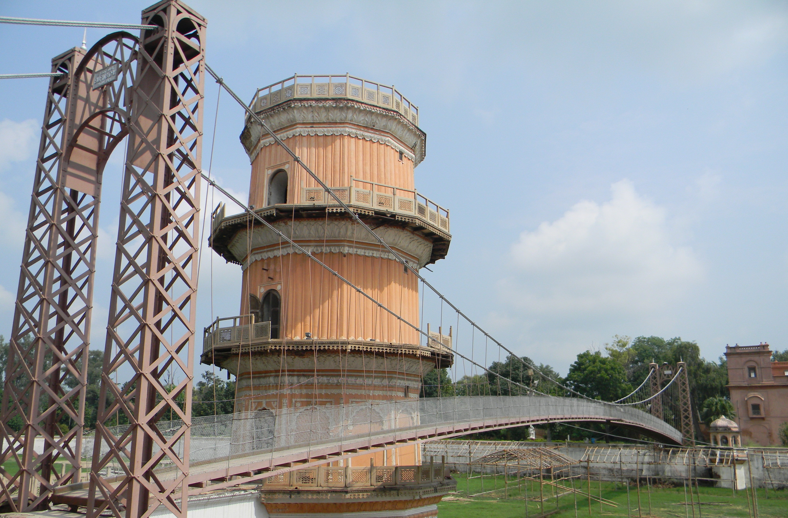
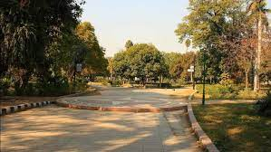

History
Patiala state was established in 1763 by Ala Singh, a Jat Sikh chieftain, who laid the foundation of the Patiala fort known as Qila Mubarak, around 'which the present city of Patiala is built. After the Third Battle of Panipat in 1761 in which the Marathas were defeated by the Afghans, the writ of the Afghans prevailed throughout Punjab. It is at this stage that the rulers of Patiala began to acquire ensigns of royalty. The Patiala state saw more than forty years of a ceaseless power struggle with the Afghan Durrani Empire, Maratha Empire and the Sikh Empire of Lahore.
In 1808, the Raja of Patiala entered into a treaty with the British against Sikh ruler Maharaja Ranjit Singh of Lahore in 1808, thus becoming collaborator in the grand empire building process by the British in, the sub-continent of India. Patiala became a 17-guns salute state during the British Raj. The rulers of Patiala such as Karam Singh, Narinder Singh, Mahendra Singh, Rajinder Singh, Bhupinder Singh, and Yadvindra Singh were treated with respect and dignity by the British.
The city of Patiala was designed and developed according to a plan akin to that of temple architecture, the first settlers of Patiala were the Hindus of Sirhind, who opened their business establishments outside the Darshani Gate.The royal house is now headed by Captain Amarinder Singh The royals are considered cultural and political icons in east Punjab.Maharaja Karam Singh who ruled from 1813 to 1845 (the Sikh Kingdom of Patiala in Punjab) joined the British East India Company and helped the British during the First Anglo Sikh wars against the Sikh Empire of Maharajah Ranjit Singh of Punjab which was larger and extended from Tibet Kashmir, plains of Punjab to Peshawar near the Afghan borders.
Some of the Tourist Attractions:
Dukh Niwaran Sahib
According to local tradition, supported by an old handwritten document preserved in the Gurdwara, one Bhag Ram, a Jhivar of Lehal, waited upon ninth Guru of Sikhs Guru Tegh Bahadur during his sojourn at Saifabad (now Bahadurgarh). He requested that the Guru might be pleased to visit and bless his village so that its inhabitants could be rid of a severe and mysterious sickness that had been their bane for a long time.
The Guru visited Lehal on Magh sudi 5, 1728 Bikram/24 January 1672 and stayed under a banyan tree by the side of a pond. The sickness in the village subsided. The site where Guru Tegh Bahadur had sat came to be known as Dukh Nivaran, literally meaning eradicator of suffering. Devotees have faith in the healing qualities of water in the Sarovar attached to the shrine. It is still believed that any illness can be cured by 'ishnaan' on five consecutive Panchami. It is in the vicinity of Patiala Bus Station.
Sheesh Mahal
A part of the Old Moti Bagh Palace built in the 19th century by the Maharajas is the famous Sheesh Mahal, literally meaning the Palace of Mirrors. The mahal contains a large number of frescoes, most of which were made under His Highness Maharaja Narinder Singh. A lake in front of the palace adds to the beauty. Lakshman Jhula, a bridge built across the lake, is a famous attraction. A museum housing the largest collection of medals from the world collected by His Highness Maharaja Bhupinder Singh is here.
Currently, the museum along with the main building is closed for public viewing because of renovation. However, tourists can access the surroundings of the Mahal along with the Lakshman Jhula.Baradari Gardens
The Baradari Gardens, the garden with 12 gates, are in the north of old Patiala city, just outside Sheranwala Gate. The garden complex, set up during the reign of Maharaja Rajindera Singh, has extensive vegetation of rare trees, shrubs, and flowers dotted with impressive Colonial buildings and a marble statue of Maharaja Rajindera Singh. It was built as a royal residence with a cricket stadium, a skating rink, and a small palace set in its heart named Rajindera Kothi. The gardens include a museum building with collections of Maharaja Ranjeet Singh.
After extensive restoration, it opened as a heritage hotel run by Neemrana Hotels group in 2009. It is Punjab's first heritage hotel. It is near Press Club Patiala which was established in 2006 and now headed by Parveen Komal, president.
Press Club Patiala is situated at Barandari Garden Near 20 No. Railway Crossing. Headed by Mr. Parveen Komal President www.pressclubpatiala.com. It was established by Captain Amrinder Singh Chief Minister Of Punjab in 2006.
Bahadurgarh Fort

The Bahadurgarh Fort is 6 kilometers away from Patiala city. It is situated on Patiala-Chandigarh road. The fort was constructed by mughal Nawab Saif Khan in 1658 A.D where Guru Teg Bahadur visited him and later renovated by a Sikh ruler Maharaja Karam Singh in 1837. The construction of the entire fort was completed in eight years. A sum of ten lakh rupees was spent on its construction. It covers an area of 2 km2 (0.77 sq mi). The fort is enclosed within two rounded walls and a moat. The circumference of the fort is slightly over two kilometers.
The name Bahadurgarh fort was given by Maharaja Karam Singh as a tribute to the Sikh Guru Teg Bahadur who stayed here for three months and nine days before leaving for Delhi where he was executed by Aurangzeb in 1675 CE. The fort consists of a historical Gurdwara Sahib (a Sikh temple) named Gurdwara Sahib Patshai Nauvin. This Gurudwara shows the fine Sikh architecture. This Gurudwara is controlled by the Shiromani Gurdwara Prabhandak Committee. People visit this Gurudwara on the occasion of the festival of Baisakhi on 13 April, every year.